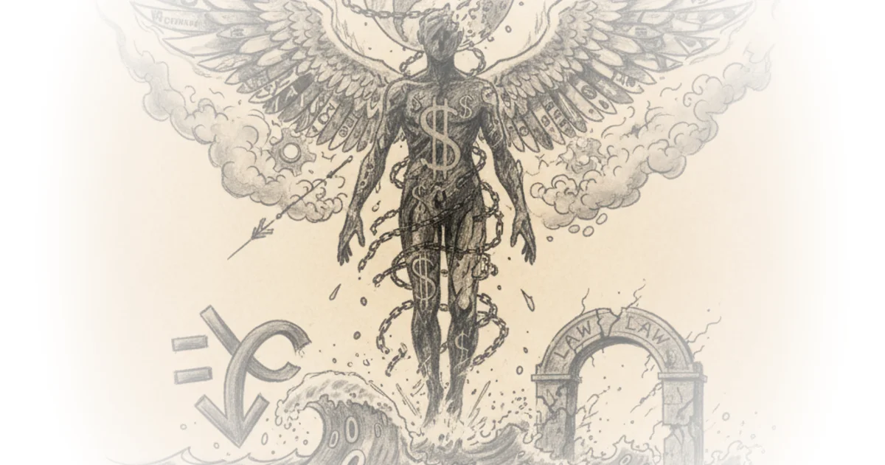

A comprehensive theory about how Jeffrey Epstein, Steve Bannon, and online message boards created the conspiracy framework that now defines American political discourse.
The Epstein Documents
The recently released Epstein documents have revealed something disturbing: powerful elites see domestic laws as suggestions to be worked around rather than rules to follow. Zero percent interest rates weren't low enough for them. The wealthy operate outside any moral framework, and the Trump administration enabled this mindset.

Emma Vigeland, co-host of the Majority Report, argues that we should no longer find it controversial to say Epstein was killed—someone with his connections to intelligence anticipated exactly what might happen to him in prison.
The documents remain heavily redracted. Why some information stayed visible while other material disappeared raises serious questions about who controls the narrative and for what purpose.
Pizzagate and Its Origins
Pizzagate emerged from a specific corner of the internet—4chan, an unmoderated forum where conspiracy theories incubated unchecked. The head of 4chan (known as "Moot") met with Jeffrey Epstein to discuss creating /pol/, a political board designed to contain far-right elements.
That containment became incubation. Instead of limiting these forces, /pol/ essentially programmed the news feed for millions of people responding to increasingly extreme content. Some analysts believe this was intentional—designed to amplify those forces rather than suppress them.
Gilaine Maxwell, who supposedly led progressive Reddit boards, now faces accusations that she and Jeffrey Epstein puppet-mastered the culture wars of recent years by stoking progressively inflammatory content on Reddit—a strategy meant to distract from emerging class consciousness and economic frustration in America.
The Bannon Connection
Steve Bannon's relationship with Epstein is particularly illuminating. Before entering politics, Banner worked in Hollywood and video games—specifically identifying through Gamergate, a misogynistic online controversy that forked from 4chan as another containment effort.
Bannon saw a constituency: angry young male gamers with reflexive hatred toward women and minorities. He recognized this could become politically potent for Donald Trump. The constant communication between Epstein and Bannon wasn't coincidental—it created the foundation for QAnon to later emerge.
How QAnon Emerged
QAnon started on 4chan, precisely the incubated space where conspiracy theories ran wild. The drops—supposedly secret intelligence about a deep state pedophile cabal—built directly off the Epstein story and Bill Clinton's relationship with him. Hillary Clinton was running against Trump in 2016.
The theory goes that Epstein and Bannon collaborated on a limited hangout psychological operation designed to redirect energy away from Trump and toward Democrats. The narrative that Democrats were the pedophile blood-drinking cabal—combined with Trump's relationship with Epstein—perfectly whipped up the right-wing base into conspiracism.
Bannon's instinct in 2012 identified young male gamers as a political block that could be arbitrated and narrativized later into the 2016 social media movement that fueled Trump's rise.
The Democratic Party's Failure
The left-wing perspective on Epstein involves more openness to certain theories than mainstream liberals might prefer. But there's a structural problem with the Democratic Party: they consciously cultivated affluent, college-educated voters while losing blue-collar workers. Chuck Schumer said in 2016 that for every working-class voter lost, they'd gain two suburban voters.
That strategy failed completely. The educated voter base is exactly the group the system has worked for—they're reticent to challenge it. When people discuss elite cabals calling the shots, they're labeled conspiracy theorists—precisely because those elites benefit from maintaining the status quo.
The Democratic Party's coalition narrowed significantly. They ceded territory to right-wing narratives that use this frustration cynically—and they failed to articulate an alternative vision for working-class Americans.
The Question of Elite Accountability
Nothing would shock anyone anymore given what we've learned about elite circles. The sulfuric acid orders, the deaths of girls—these appear documented. But cannibalism and ritual abuse remain contested.
The Department of Justice was cornered by legislation requiring document release. Every house member except one supported it, and the Senate passed it unanimously. Documents have been redacted illegally. Some theories are useful regardless of whether they're true—the most extreme content serves as psychological leverage.
We need to examine what wealth, power, and lawlessness do to individual psyches. These elites operate without constraint. They reify rapacious masculinity through abuse. The rules of society don't apply because they have conquered everything.
Nothing can hold me back—that's the mindset of unfettered elite power.
Bottom Line
This piece offers a coherent theory connecting Epstein, Bannon, 4chan, and QAnon into a narrative that explains how conspiracy thinking reshaped American politics. Its strongest insight is showing how internet forums incubated extremist content that later became mainstream political movements. The vulnerability: some claims about cannibalism and ritual abuse lack verification and could be exactly the kind of psychological manipulation the author describes. Watch for whether emerging document releases reveal more connections between elite networks and political power—or whether they simply confirm what we already suspected.